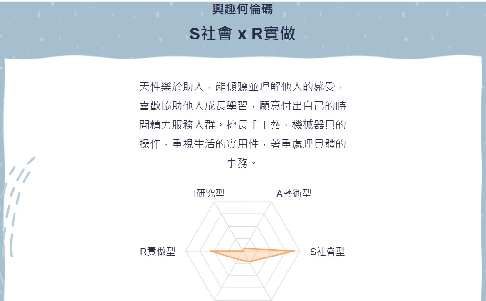
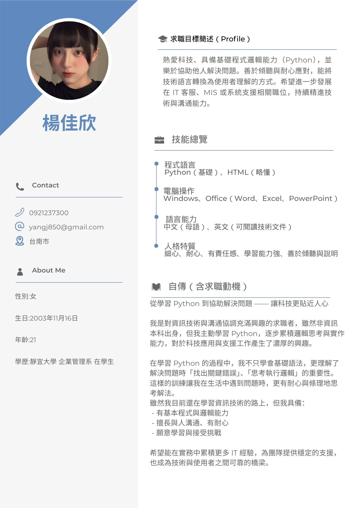

個人簡介
基本資料
姓名:楊佳欣
系級:企管三B
學號:411139167
信箱:yangj850@gmail.com
興趣何倫碼測驗結果
興趣何倫碼源自心理學家John Holland的生涯類型論，如果個人的興趣和職業能適配，就能獲得較高的動機、穩定性和滿足感，成為最佳的生涯選擇。
我的HOLLAND碼類型為:S社會型 & R實做型
S社會型:對人和善，容易相處，他們關心自己和別人的感受，喜歡傾聽和了解別人，也願意付出時間和精力去解決別人的衝突，喜歡教導別人，並幫助他人成長。不愛競爭，喜歡大家一起作事，一起為團體盡力。交友廣闊，關心別人勝於關心工作。
R實做型:情緒穩定、有耐性、坦誠直率，他們通常直接行動而不多言，喜歡在講求實際、需要動手的環境中依既定的規則，一步步地製造出有實際用途的物品。對操作工具的技術活動較有興趣，在生活中眼前的事重於對未來的想像，較喜歡獨自做事。

MIS（管理資訊系統）相關工作
•R = Realistic（實做型）：喜歡動手做、實體操作、技術執行
•S = Social（社會型）：喜歡幫助人、溝通協作、訓練教學
________________________________________
🔧 R - 實做型（Realistic） 的 MIS 相關工作：
1.IT 支援工程師 / 資訊設備管理人員
o 實地處理硬體、網路、伺服器
o 解決使用者技術問題
o 維護機房或公司資訊設備
o 很動手，也蠻需要 troubleshooting 能力
2.系統工程師（System Administrator / DevOps）
o 負責部署與維護系統環境
o 自動化工具開發、伺服器建置
o 偏實務技術操作，屬於 MIS 核心角色之一
3.資安技術人員（Cybersecurity Technician）
o 操作防火牆、弱點掃描、系統監控
o 有大量實體與系統工具使用
________________________________________
🤝 S - 社會型（Social） 的 MIS 相關工作：
1.IT 培訓師 / 系統教育訓練師
o 為員工或用戶做系統教學
o 編寫教學手冊、辦說明會
o 很需要溝通與耐心，幫助他人理解科技
2.MIS 專案管理助理 / 協調員（PM Assistant）
o 協助跨部門溝通，彙整需求
o 幫工程師跟使用者之間搭橋
o 適合喜歡與人互動，但不想做純技術的人
3.技術客服 / IT 客服支援
o 協助解決用戶使用系統時遇到的問題
o 用「懂技術的方式」和「貼近使用者語言」來解釋系統
求職履歷
未來想從事的工作:技術客服 / IT 客服支援
1.📌 技術客服 / IT 客服支援的工作內容
• 🔍 處理客戶或內部使用者的 IT 問題
• 軟體操作問題（如系統登入失敗、資料錯誤）
• 硬體設備問題（如印表機無法連接）
• 📞 使用電話、email、線上聊天室等管道協助解決問題
• 📝 紀錄問題與處理過程（trouble ticket / issue log）
• 🔄 回報系統錯誤給開發/工程部門
• 📚 撰寫 FAQ、操作教學與使用說明文件
• 🤝 協助系統上線後的教育訓練或說明會
________________________________________
2.🏢 哪些公司會需要技術客服？
💻 資訊科技公司（軟體/系統開發商):幫助使用者解決軟體操作、bug 問題
🏦 金融業（銀行、保險):協助內部員工或客戶處理系統問題
🏥 醫療產業（醫療資訊系統):醫院常有 HIS、LIS 等系統，需要 IT 客服協助醫護人員使用
🏭 製造業/連鎖業總部 IT 部門:幫分店解決系統 POS 機或連線問題
📞 外包客服中心（BPO）:承包各大公司的技術客服業務，例如 IBM、Teleperformance 等公司
☁️ SaaS（雲端服務平台):公司 幫企業客戶排除帳戶、API、系統串接等問題
________________________________________
3.📋 工作需求與應徵條件
🎓 學歷：
• 通常要求 大專以上資訊相關科系（但不一定絕對）
🛠 技能需求：
• ✅ 熟悉基本 IT 知識（例如：Windows / Office / 網路觀念）
• ✅ 有良好的溝通能力 & 問題分析能力
• ✅ 能使用客服系統（如 Zendesk、ServiceNow）
• ✅ 英文閱讀能力（視公司是否對接外商或國際客戶）
💡 加分項目：
• 有 MIS / helpdesk / IT support 經驗
• 會使用 Ticket 系統、CRM 工具
• 了解資料庫基本操作（SQL）或 API 概念
________________________________________
4.📈 未來發展方向
• 🎯 資深 IT 客服 / 客戶成功顧問（CSM）
• 🔄 系統分析師 / 產品顧問
• 🧰 MIS 工程師 / 系統維運人員
• 🧩 專案助理 / 專案經理（PM）
• 💬 培訓講師 / 教學設計（若你社會型強）
